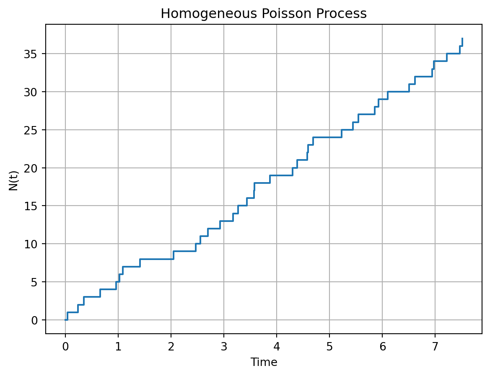
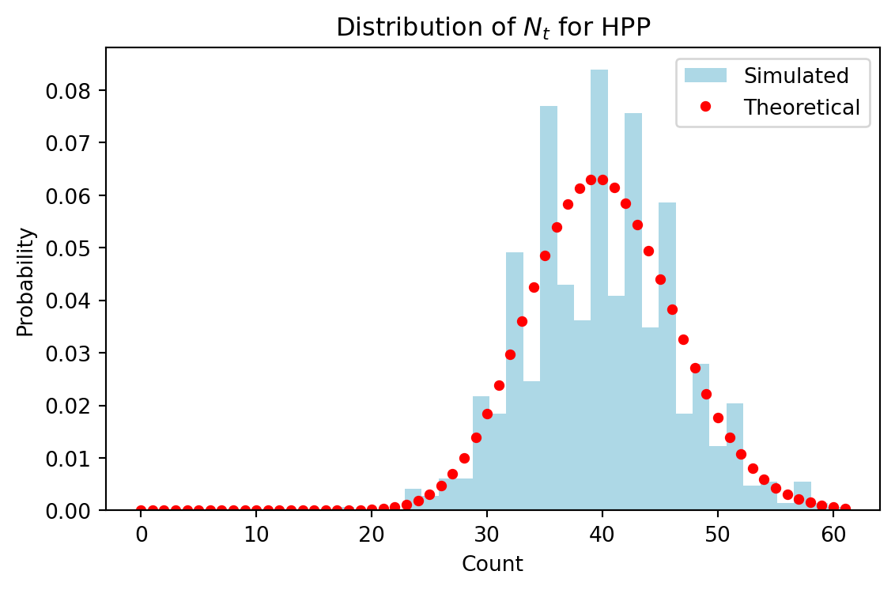
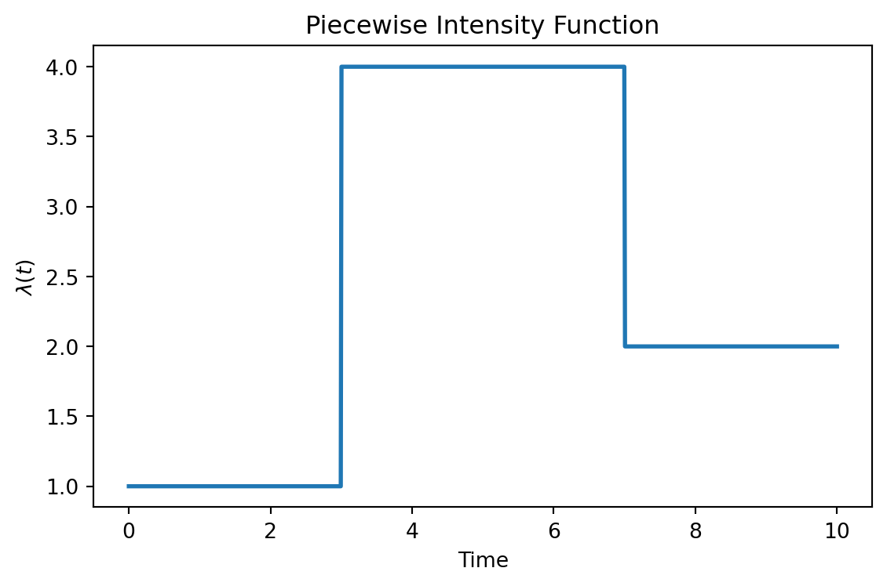
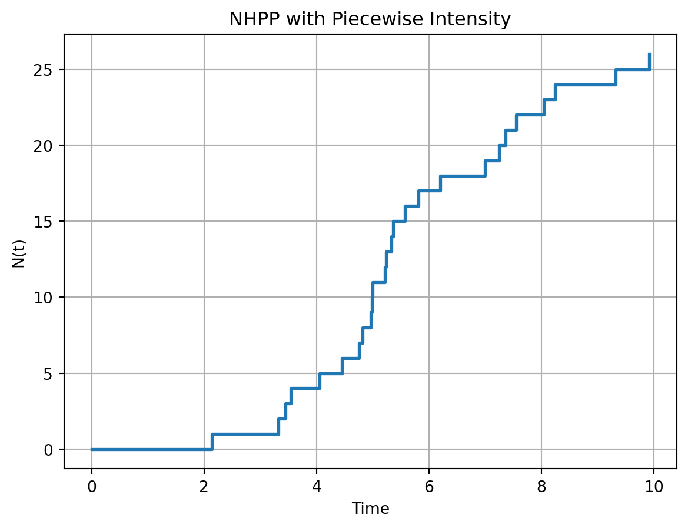

Consider a homogeneous Poisson process with rate \(\lambda = 5\) events per hour.
Simulate the process over a time interval of 8 hours (i.e., from \(t=0\) to \(t=8\)) using the inter-arrival time method. Set seed using set.seed(1234) before simulating the process.
import numpy as npdef simulate_hpp(lmbda, T_max): t =0.0 times = []whileTrue: t += np.random.exponential(scale=1/ lmbda)if t > T_max:break times.append(t)return np.array(times)np.random.seed(1234)event_times_hpp = simulate_hpp(lmbda =5, T_max =8)np.round(event_times_hpp, 2)
Plot the number of events \(N(t)\) against time \(t\) for the simulated process.
import matplotlib.pyplot as pltplt.step(np.concatenate(([0], event_times_hpp)), np.arange(len(event_times_hpp) +1), where='post')plt.xlabel("Time")plt.ylabel("N(t)")plt.title("Homogeneous Poisson Process")plt.grid(True)plt.show()

Calculate the average number of events per hour from your simulation and compare it to the theoretical rate \(\lambda\).
len(event_times_hpp) /8
4.625
The average number of events per hour from the simulation is 4.652, which is close to the theoretical rate of 5 events per hour.
Repeat the simulation 1000 times and plot the distribution of the total number of events in 8 hours. Does it match the expected Poisson distribution with mean \(\lambda \times T\)?
import numpy as npimport matplotlib.pyplot as pltfrom scipy.stats import poisson# Repeat simulation many timesnp.random.seed(1234)total_events = np.array([len(simulate_hpp(lmbda=5, T_max=8))for _ inrange(1000)])# Plot histogram of total eventsplt.figure(figsize=(6, 4))plt.hist( total_events, bins=30, density=True, color="lightblue", label="Simulated")# Theoretical Poisson distribution with mean lambda * T_maxx_vals = np.arange(0, total_events.max() +1)plt.plot( x_vals, poisson.pmf(x_vals, 5*8),"o", markersize=4, color="red", label="Theoretical")plt.xlabel("Count")plt.ylabel("Probability")plt.title("Distribution of $N_t$ for HPP")plt.legend(loc="upper right")plt.tight_layout()plt.show()

The histogram of the total number of events in 8 hours should closely match the theoretical Poisson distribution with mean \(\lambda \times T = 5 \times 8 = 40\).
Calculate the empirical probability of observing exactly 40 events in 8 hours and compare it to the theoretical probability from the Poisson distribution
print("Empirical probability of exactly 40 events:", np.mean(total_events ==40))print("Theoretical probability of exactly 40 events:", round(poisson.pmf(40, 5*8), 4))
Empirical probability of exactly 40 events: 0.063
Theoretical probability of exactly 40 events: 0.0629
Calculate the empirical probability of observing more than 50 events in 8 hours and compare it to the theoretical probability from the Poisson distribution.
print("Empirical probability of more than 50 events:", np.mean(total_events >50))print("Theoretical probability of more than 50 events:", round(1- poisson.cdf(50, 5*8), 4))
Empirical probability of more than 50 events: 0.058
Theoretical probability of more than 50 events: 0.0526
For part (e) and (f), the empirical probabilities should be reasonably close to the theoretical probabilities from the Poisson distribution, especially as the number of simulations increases. The differences can be attributed to random variation in the simulations.
Exercise 2: Simulating a NHPP with a piecewise intensity function
A non-homogeneous Poisson process has an intensity function that varies over time. Consider the following piecewise intensity function:
Plot the intensity function \(\lambda(t)\) over the time interval \([0, 10]\).
import numpy as npimport matplotlib.pyplot as pltdef lambda_fun(t):return np.where(t <3, 1, np.where(t <7, 4, 2))# Time gridt = np.linspace(0, 10, 1000)# Plotplt.figure(figsize=(6, 4))plt.plot(t, lambda_fun(t), linewidth=2)plt.xlabel("Time")plt.ylabel(r"$\lambda(t)$")plt.title("Piecewise Intensity Function")plt.tight_layout()plt.show()

Use the thinning algorithm to simulate a NHPP with this intensity function over the time interval \([0, 10]\). Set seed using set.seed(1234) before simulating the process.
import numpy as npdef simulate_nhpp_thinning(lambda_fun, lambda_max, T_max): t =0.0 times = []whileTrue:# Propose next event time from HPP(lambda_max) t += np.random.exponential(scale=1/ lambda_max)if t > T_max:break# Accept–reject stepif np.random.rand() <= lambda_fun(t) / lambda_max: times.append(t)return np.array(times)np.random.seed(1234)lambda_max =4T_max =10event_times_nhpp = simulate_nhpp_thinning(lambda_fun, lambda_max, T_max)np.round(event_times_nhpp, 2)
Report the number of events that occurred in the simulated NHPP. Compare it to the expected number of events.
# simulated number of eventslen(event_times_nhpp)# expected number of eventsfrom scipy.integrate import quadexpected_events, _ = quad(lambda_fun, 0, T_max)print(np.rint(expected_events).astype(int)) # expected_events
25
The expected number of events can be calculated by integrating the intensity function over the time interval. For a step function like this, we can calculate it as:
The simulated number of events should be reasonably close to this expected value, although some variation is expected due to randomness in the simulation.
Plot the cumulative count of events over time, i.e., plot \(N(t)\) against \(t.\)
plt.step(np.concatenate(([0], event_times_nhpp)), np.arange(len(event_times_nhpp) +1), where='post', linewidth=2)plt.xlabel("Time")plt.ylabel("N(t)")plt.title("NHPP with Piecewise Intensity")plt.grid(True)plt.show()

Do you think the thinning algorithm is efficient for simulating this NHPP? Why or why not?
The efficiency of the thinning algorithm depends on how closely the maximum intensity \(\lambda_{max}\) matches the actual intensity function \(\lambda(t)\). In this case, since \(\lambda(t)\) takes values of 1, 4, and 2, and we set \(\lambda_{max} = 4\), the algorithm will be more efficient during the time intervals where \(\lambda(t)\) is close to 4 (i.e., between 3 and 7). However, during the intervals where \(\lambda(t)\) is much lower (i.e., between 0 and 3, and between 7 and 10), many proposed events will be rejected, which can lead to inefficiency. If the intensity function had a smaller maximum value or if we could use a piecewise constant upper bound that better matches the intensity function, the algorithm would be more efficient.
We can calculate the acceptance rate of the thinning algorithm to quantify its efficiency:
This means that approximately 62.5% of the proposed events are accepted, which is a reasonable acceptance rate. However, if the maximum intensity were much higher than the average intensity, the acceptance rate would drop, making the algorithm less efficient.
Exercise 3: Simulating M/M/\(c\) (Extended)
Consider the M/M/2 queueing system of the EV charging station dicussed in 🚗 EV Charging Bays Simulation with the following parameters:
initial state (number of customers) \(X_0 = 0\).
arrival rate \(\lambda = 3\)
service rate \(\mu = 2\) per server
a total simulation time of 720 hours (60 working days for 12 hours per day).
import numpy as npimport pandas as pddef simulate_mmc(lambda_=2, mu=3, c=2, sim_time=10, seed=1234):if seed isnotNone: np.random.seed(seed)# System state T =0.0 X =0# Output dataframe (event log) records = [{"time": 0.0,"state": 0,"event": "Start","server": np.nan,"start": np.nan,"end": np.nan }]# Next arrival time T_a = np.random.exponential(scale=1/ lambda_)# Active services: one row per busy server services = pd.DataFrame({"server": pd.Series(dtype="int64"),"start": pd.Series(dtype="float64"),"end": pd.Series(dtype="float64"), })while T < sim_time:# Next service completion T_s = services["end"].min() ifnot services.empty else np.infifmin(T_a, T_s) > sim_time:breakif T_a < T_s:# ----------------# Arrival event# ---------------- T = T_a X +=1 records.append({"time": T,"state": X,"event": "Arrival","server": np.nan,"start": np.nan,"end": np.nan })# Schedule next arrival T_a = T + np.random.exponential(scale=1/ lambda_)# Start service immediately if a server is freeif X <= c: busy = services["server"].astype(int).tolist() idle =list(set(range(1, c +1)) -set(busy)) srv = np.random.choice(idle) dur = np.random.exponential(scale=1/ mu) services = pd.concat( [ services, pd.DataFrame([{"server": srv,"start": T,"end": T + dur }]) ], ignore_index=True )else:# ----------------# Departure event# ---------------- idx = services["end"].idxmin() srv = services.loc[idx, "server"] s0 = services.loc[idx, "start"] s1 = services.loc[idx, "end"] T = s1 X -=1 records.append({"time": T,"state": X,"event": "Departure","server": srv,"start": s0,"end": s1 })# Remove completed service services = services.drop(index=idx).reset_index(drop=True)# If queue non‑empty, same server starts next service immediatelyif X >= c: dur = np.random.exponential(scale=1/ mu) services = pd.concat( [ services, pd.DataFrame([{"server": srv,"start": T,"end": T + dur }]) ], ignore_index=True ) df = pd.DataFrame(records) df["time"] = df["time"].round(4)return df
Conduct a comparative analysis if EV adoption increases, i.e., re-run the simulation with \(\lambda = 3.5\) cars/hour. How do the average waiting time (\(W_q\)) and utilisation (\(\rho\)) change?
# Erlang-C formula for M/M/c probability of waitingimport numpy as npimport pandas as pdfrom math import factorialdef erlang_c(lmbda, mu, c): a = lmbda / mu rho = lmbda / (c * mu)if rho >=1:return1.0# unstable system → all arrivals wait (by convention) sum_terms =sum(a**k / factorial(k) for k inrange(c)) top = (a**c / factorial(c)) * (1/ (1- rho)) P_wait = top / (sum_terms + top)return P_wait# Calculate P0 for M/M/cdef P0_mmc(lmbda, mu, c): a = lmbda / mu rho = lmbda / (c * mu) sum_terms =sum(a**k / factorial(k) for k inrange(c)) top = (a**c / factorial(c)) * (1/ (1- rho)) P0 =1/ (sum_terms + top)return P0def mmc_metrics(lmbda, mu, c, sim_time): df = simulate_mmc(lmbda, mu, c, sim_time) durations = np.diff(df["time"].values) states = df["state"].values[:-1] total_time = durations.sum()# Empirical metrics rho_hat = np.sum((states >0) * durations) / total_time L_hat = np.sum(states * durations) / total_time Lq_hat = L_hat - rho_hat W_hat = L_hat / lmbda Wq_hat = W_hat -1/ mu P0_hat = np.sum((states ==0) * durations) / total_time# Theoretical metrics P_wait = erlang_c(lmbda, mu, c) rho = lmbda / (c * mu) Lq_theory = P_wait * (rho / (1- rho)) L_theory = Lq_theory + (lmbda / mu) Wq_theory = Lq_theory / lmbda W_theory = Wq_theory + (1/ mu) P0_theory = P0_mmc(lmbda, mu, c)return pd.DataFrame({"Simulated": [ lmbda, mu, c, round(P_wait, 3), round(rho_hat, 3),round(L_hat, 3), round(Lq_hat, 3),round(W_hat, 3), round(Wq_hat, 3), round(P0_hat, 3) ],"Theoretical": [ lmbda, mu, c, round(P_wait, 3), round(rho, 3),round(L_theory, 3), round(Lq_theory, 3),round(W_theory, 3), round(Wq_theory, 3), round(P0_theory, 3) ] })metrics = ["lambda", "mu", "c", "P_wait", "Utilisation","Avg. number in system", "Avg. number in queue","Avg. response time", "Avg. waiting time", "P(system empty)"]results = pd.DataFrame({"Metric": metrics})lambda_values = [3, 3.5]for lam in lambda_values: col = mmc_metrics(lam, mu=2, c=2, sim_time=720) results = pd.concat([results, col], axis=1)results
Metric
Simulated
Theoretical
Simulated
Theoretical
0
lambda
3.000
3.000
3.500
3.500
1
mu
2.000
2.000
2.000
2.000
2
c
2.000
2.000
2.000
2.000
3
P_wait
0.643
0.643
0.817
0.817
4
Utilisation
0.857
0.750
0.906
0.875
5
Avg. number in system
3.456
3.429
5.324
7.467
6
Avg. number in queue
2.599
1.929
4.418
5.717
7
Avg. response time
1.152
1.143
1.521
2.133
8
Avg. waiting time
0.652
0.643
1.021
1.633
9
P(system empty)
0.143
0.143
0.094
0.067
Note that the difference between the simulated and theoretical metrics can be attributed to random variation in the simulation, especially for metrics that depend on the tail of the distribution (e.g., probability of waiting). Let’s discuss the theoretical changes in average waiting time and utilisation when \(\lambda\) increases from 3 to 3.5:
Utilisation increases from 0.75 to 0.875. This means that the EV charging stations will be busier on average, and there will be less idle time. A utilisation of 0.875 indicates that the system is highly utilised and is approaching its capacity, which can lead to congestion and longer waiting times.
As utilisation increases, the average waiting time will also increase from 0.643 hours (38.6 minutes) to 1.633 hours (1 hour and 38 minutes).
What if charging is slower in winter? Increase the mean charging time to 37.5 minutes (i.e., \(\mu = 1.6\)). How does this affect utilisation and waiting?
results2 = pd.DataFrame({"Metric": metrics})mu_values = [2, 1.6]for mu in mu_values: col = mmc_metrics(3, mu=mu, c=2, sim_time=720) results2 = pd.concat([results2, col], axis=1)results2
Metric
Simulated
Theoretical
Simulated
Theoretical
0
lambda
3.000
3.000
3.000
3.000
1
mu
2.000
2.000
1.600
1.600
2
c
2.000
2.000
2.000
2.000
3
P_wait
0.643
0.643
0.907
0.907
4
Utilisation
0.857
0.750
0.957
0.938
5
Avg. number in system
3.456
3.429
8.233
15.484
6
Avg. number in queue
2.599
1.929
7.275
13.609
7
Avg. response time
1.152
1.143
2.744
5.161
8
Avg. waiting time
0.652
0.643
2.119
4.536
9
P(system empty)
0.143
0.143
0.043
0.032
Utilisation (\(\rho\)) increases from 0.75 to 0.9375, which indicates that the system is even more heavily utilised and is very close to its capacity.
Average waiting time (\(W_q\)) increases significantly from 0.643 hours (38.6 minutes) to 4.536 hours (4 hours and 32 minutes). This dramatic increase in waiting time is due to the fact that the service rate has decreased, leading to longer service times and more congestion in the system.
The university is planning to add more chargers to the station as the analysis (from part (a) and (b)) shows that the current system will be heavily utilised if the arrival rate increases or if the service rate decreases only by just a little. Suppose that in the next couple years the arrival rate is expected to increase to 4 cars/hour and the mean charging time during winter is 37.5 minutes (i.e., \(\mu = 1.6\)), how many chargers should the university plan to install?
c_values = [2, 3, 4, 5]rho_values = [4/ (c *1.6) for c in c_values]pd.DataFrame({"Chargers": c_values,"Utilisation": [round(rho, 3) for rho in rho_values],"Recommendation": ["Underutilised"if rho <0.6else"Efficient"if rho <0.8else"High utilisation"if rho <1else"Not Recommended"for rho in rho_values]})